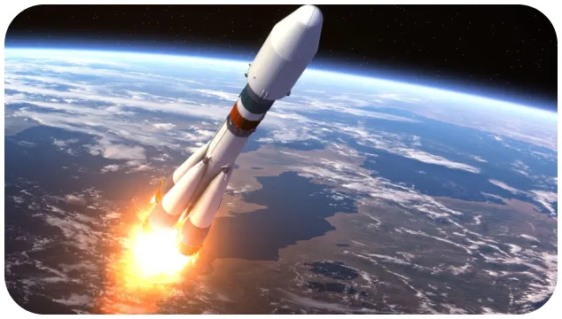

X'plore
l’iss : une avancée spatiale
Est-il possible de voyager dans l’espace ?
20 novembre 1998, c’est la mise en orbite de la station spatiale internationale ISS. Un projet commun entr les Etats-Unis, la Russie, le Canada et l’Union européenne. Aujourd’hui se sont 16 pays au total qui collaborent à l’élaboration de l’ISS. Depuis, la station n’a cessé de s’agrandir, jusqu’à mesurer 109 mètres de longueur, 73 mètres de largeur et 33 mètres de hauteur pour un poids total de 400 tonnes. C’est le laboratoire le plus chère de l’histoire : 150 milliards de dollars investis.
Préparer le FUTUR de L’EXPLORATION SPATIALE
Laboratoire ? Oui, car c’est avant tout la fonction première de cette base. Depuis plus de 10 ans, 232 astronautes de 18 nationalités différentes y ont séjourné pour y mener différentes expériences dans des conditions d’impesanteur. Les domaines sont variés mais l’objectif principale est de comprendre le fonctionnement humain en condition spatiale. Les nombreuses découvertes nous sont utiles sur terre. Certaines expériences pourraient être un remède contre les tumeurs du cerveau. Mais la base arrive à sa phase de détérioration. Les projets à bord de l’ISS pourraient bien s’arrêter pour 2025. La base sera dirigée vers le soleil pour y disparaitre. Mais avant que cela n’arrive, de nombreux pays gardent beaucoup d’espoir sur les avancées scientifiques à bord.
L’objectif ? parvenir à séjourner plus de 6 mois dans l’espace. 6 mois. C’est ce qui correspond à la distance entre la terre et mars. Mais un tel voyage représente encore un défi pour notre corps dans l’environnement spatial...
3 INVENTIONS INCROYABLES de l’ISS

abonnez - vous gratuitement pour découvrir nos nouveaux articles
X'plore
Pour aller plus loin :
Rejoind une communauté de passionné.
#xplore #space #decouverte #technology
Retrouve X’plore sur YouTube et découvre nos meilleurs sujets.
Réagit à toute notre actualité